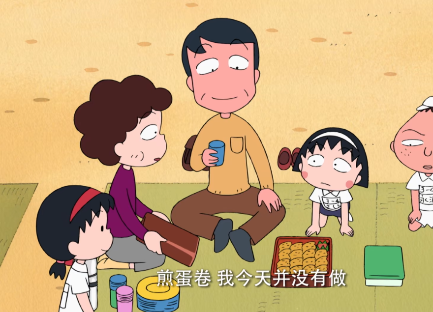
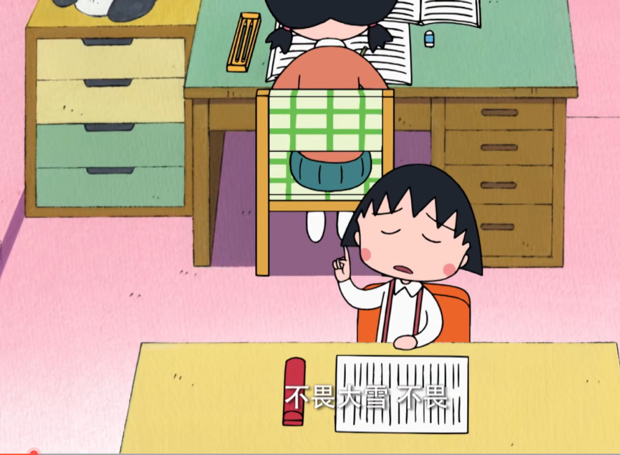
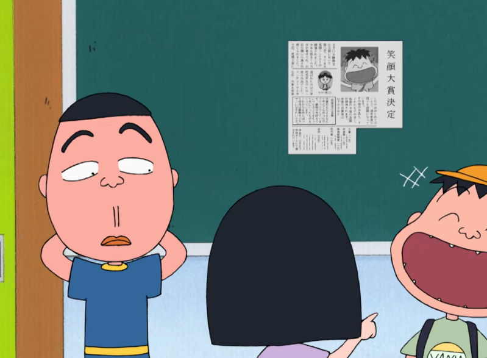

运动会的便当
因为弟弟太郎发烧的缘故永泽的家人并没有来运动会，到了午餐的时间善良的小丸子无法放下永泽便邀请..

小丸子挑战背书
今天老师布置了背诵作业，小丸子在回家的路上、家里、洗澡的时候都无时无刻不在背书，而爷爷也为了...

山田的笑容大奖
报纸上面刊登了山田的照片，和平常一样的傻笑竟然获得了笑容摄影大赛的一等奖，这件事情很快便在全校..
该片讲述了小丸子上幼儿园和小学低年级的故事，大家已经熟知了这个俏皮、童真、聪慧、富有创意 又缺点一大把的女孩子。而在第二部中，小丸子已经升入了三年级。故事自然还是围绕着她在生活和学习 中与家人、朋友、老师、同学之间发生的一桩桩有趣的情景展开，有关于亲情、爱心以及同学之间的友情。
查看更多>因为弟弟太郎发烧的缘故永泽的家人并没有来运动会，到了午餐的时间善良的小丸子无法放下永泽便邀请..
今天老师布置了背诵作业，小丸子在回家的路上、家里、洗澡的时候都无时无刻不在背书，而爷爷也为了...
报纸上面刊登了山田的照片，和平常一样的傻笑竟然获得了笑容摄影大赛的一等奖，这件事情很快便在全校..